Stop! If you’ve jumped ahead to this chapter because you saw the word “strategies,” then please stop reading because this chapter builds on the foundations that were covered earlier in the book. So if you haven’t read the earlier sections, stop right now and go back to page one. But if you’ve followed everything, then this is where the “magic” happens.
After I completed my national service, I wanted to further my studies. So I enrolled at the University of London (UOL), where I studied banking and finance.
Now, I didn’t want to “smoke my way” through university by doing the least possible amount of work. Nope. I wanted to graduate with First Class Honours and make my parents proud (if you’re unaware of my history, I had been an academically weak student throughout my teenage years). I had to make it happen. So what did I do?
I went all in! I studied everything I could get my hands on: Google, YouTube, library books, past year exam papers – everything. And one thing I realized was that I couldn’t just “blindly” memorize questions and answers because there were so many variations on what I was learning. And UOL is known for giving poor marks if your answers look like they were created from a template. So what did I do?
I figured the only way to get First Class Honours was to truly understand the subject matter. That meant I couldn’t rely on memorizing stuff; I had to understand the concepts behind what I was learning. So I focused on learning the concepts—understanding the why instead of the how. Did it work? Fortunately, I can say yes! Because in 2012, I graduated with First Class Honours and finished second in my cohort.
So why am I sharing this with you?
Well, it’s the same with trading! You’ve got to focus on the concepts, not the specific strategies or tactics. The reason is simple: Once you’ve mastered the concepts, then nothing can trick you because you will know why something works (not just how).
This means you can develop trading strategies to fit your style—and not be swayed by the “latest” trading systems that fool many traders.
So instead of spoon-feeding you specific trading strategies, I’d rather teach you trading formulas, explain the concepts behind them, and show you how you can use these formulas to develop your own trading strategies. And that’s what you’re about to discover right now. Let’s begin.
First, let me introduce you to the MAEE formula (which is about trading price reversals). MAEE stands for market structure, area of value, entry trigger, and exits. And if you haven’t realized it yet, these are the individual components we covered earlier (if you haven’t read about these, please stop and go back to page one). Here’s how it works:
Now let me walk you through a few examples:
Example 1: GBPUSD daily:
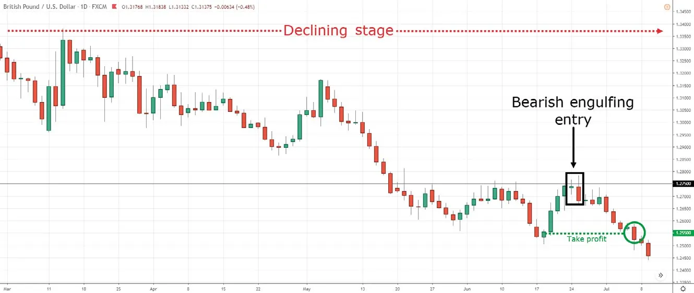GBPUSD is in a declining stage (market structure) with a series of lower highs and lows. The price did a pullback towards resistance at 1.2750 (area of value) and formed a bearish engulfing pattern (entry trigger). You could set your stop loss 1 ATR above the highs of resistance (exit when you’re wrong) and have a target profit at the nearest swing low, which is around 1.2550 area (exit when you’re right).
Example 2: Copper 8-hour:
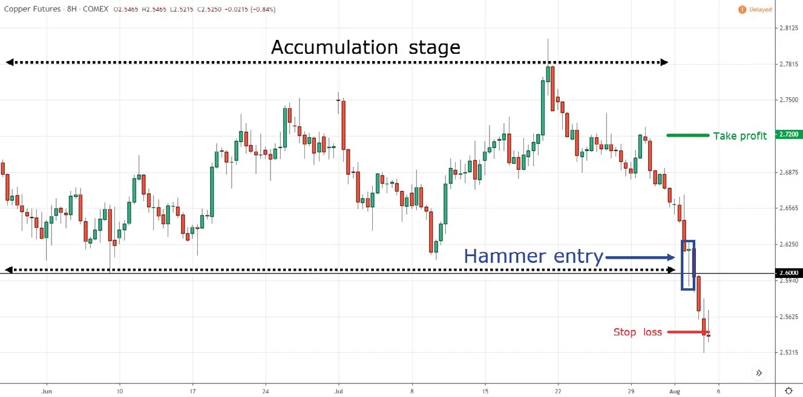Copper is in a potential accumulation stage (market structure). The price collapsed to support at 2.600 (area of value) and formed a hammer (entry trigger). You could have your stop loss 1 ATR below the lows of the hammer (exit when you’re wrong) and have a target profit at the nearest swing high, which is around the 2.720 area (exit when you’re right).
Example 3: AUDJPY daily:
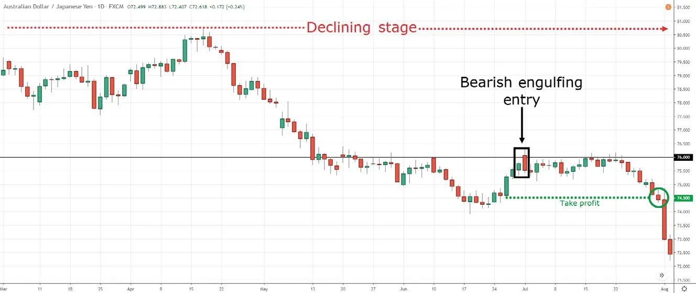AUDJPY is in a declining stage (market structure). The price did a pullback toward the 76.00 resistance (area of value) and then gapped up higher before forming a bearish engulfing pattern (entry trigger). You could set your stop loss 1 ATR above the highs of resistance (exit when you’re wrong) and have a target profit at the nearest swing low, which is around the 74.50 area (exit when you’re right).
Here’s the thing. The MAEE formula is not cast in stone because you can tweak it to suit your needs. For example, if you don’t want to use support as an area of value, then consider something else, like moving average, trendline, etc. Likewise, you don’t have to use candlestick patterns to define your entry trigger. You could go with something simple like a “higher close,” or when the RSI indicator crosses above 30, etc. Again, it’s up to you to figure out and validate what works for you.
Now to illustrate my point, here’s another variation of the MAEE formula:
Example 4-1: NZDUSD daily:
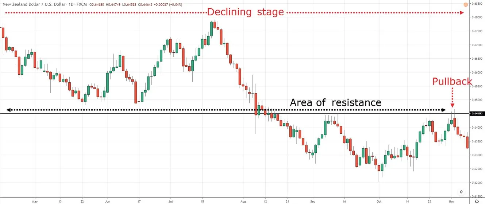NZDUSD is in a declining stage (market structure) and the price has pulled back towards resistance at 0.6450 (area of value).
Example 4-2: NZDUSD 4-hour:
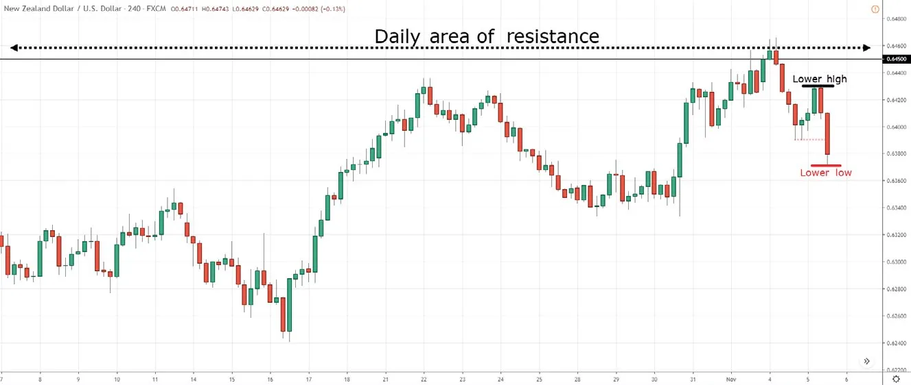In the 4-hour time frame, you’ll notice the price formed a lower high and low, which signals the sellers are in control. So when the price breaks the swing low, that can be an entry trigger to go short. Again, your stop loss is 1 ATR above resistance (exit when you’re wrong).
Example 4-3: NZDUSD daily:
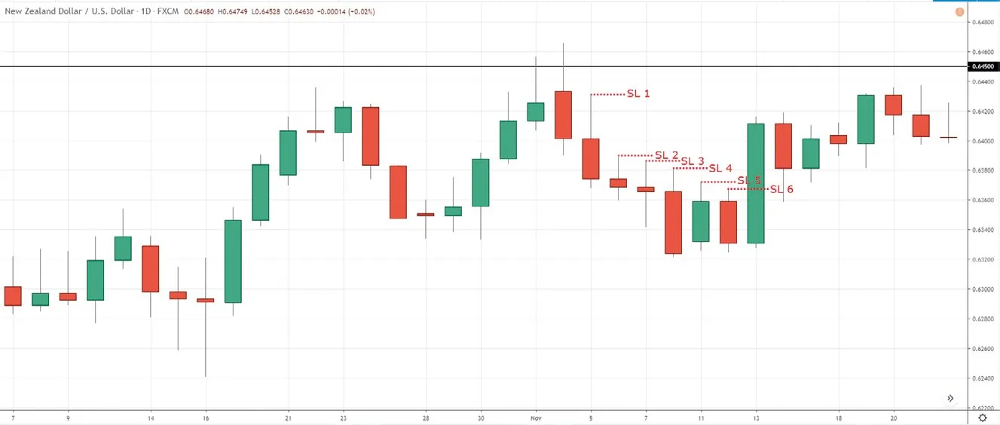Now, what about exiting your winners? Well, you can use a fixed target profit like we discussed earlier, or you can adopt a trailing stop loss. For example, you can trail your stop loss using the previous day’s high. So if the price breaks and closes above the previous day’s highs, then you’ll exit the trade (exit when you’re wrong). Otherwise, you can hold onto the trade and ride the move lower for as long it goes, until it hits your trailing stop loss.
BONUS TIPS (MAEE FORMULA)
Before we move on, I want to share a few important things to keep in mind when you trade using the MAEE formula. On the surface, you know what to look for. But if you dive deeper, there are a few “secret ingredients” that will dramatically improve the quality of your trading setups. These took me years to figure out, and you’re about to discover them right now.
This looks like big-bodied candles coming into an area of value (with little-or-no pullback). I know this sounds like a contradiction, so let me explain. When you get a strong momentum move lower, it’s because there isn’t enough buying pressure to hold up the price. That’s why the price drops lower to find new buyers. The “down move” is called a liquidity gap (a lack of interest) because not many transactions took place on the decline. In other words, the market can easily reverse and start moving in the opposite direction due to a lack of interest around the price level—and that’s why you often see a power move down into support, and then BOOM, the price does a 180-degree reversal.
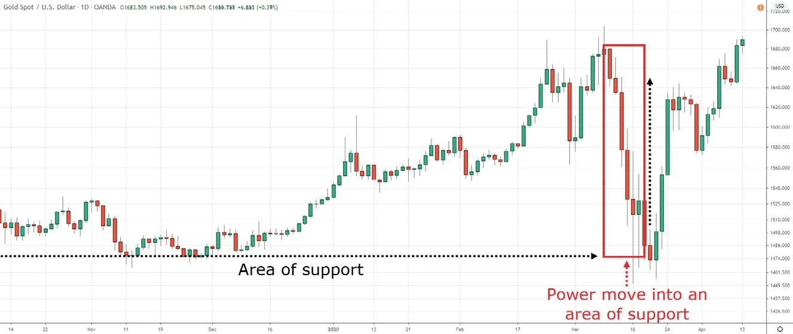Also, when you trade the reversal after a power move into support, the nearest swing high is likely some distance away—and this offers you a more favorable risk-to-reward ratio.
For example, let’s say you’re looking for selling opportunities. When you identify your entry trigger, you want the range of the candle to be large (at least 1.5 times ATR), and the price closing near the lows. This signals there’s strong price rejection. Here’s an example:
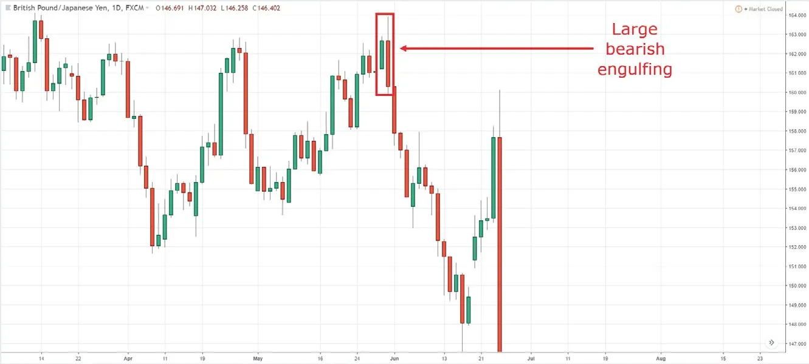And here’s an example of a weak price rejection:
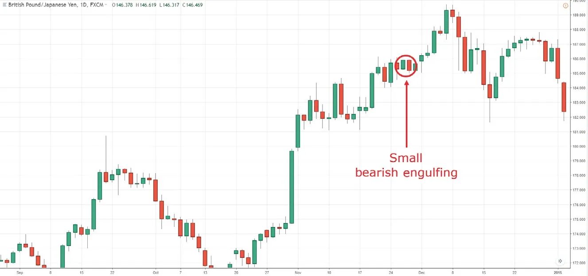See the difference?
These areas (or levels) are the most obvious ones on your charts. They could be multi-year highs/lows, areas that haven’t been tested in a long time, or areas that previously led to strong reversals. But why pay attention to these? Because these areas attract attention from both breakout and reversal traders. Imagine, the price breaks out higher and breakout traders go long hoping to capture a piece of the move. As you know, not all breakouts are successful, and the ones that reverse will put breakout traders in the red. And when the price declines further, it’ll hit their stop losses, which puts strong selling pressure on the markets—and this is great for trading the MAEE formula.
THE MBEE FORMULA
The MBEE formula is about trading breakouts. MBEE stands for market structure, buildup, entry trigger, and exits. Now, you’re probably familiar with all of the individual components except buildup, so let me explain what that is. A buildup looks like a series of narrow range candles (or a tight consolidation).
You’re probably wondering, “But why look for a buildup?” A buildup occurs when the market's volatility is low. This means your stop loss is tighter, which offers you a more favorable risk-to-reward ratio on your trade (especially if volatility expands in your favor). So let me illustrate the MBEE formula with a few examples.
Example 1: USDCNH daily:
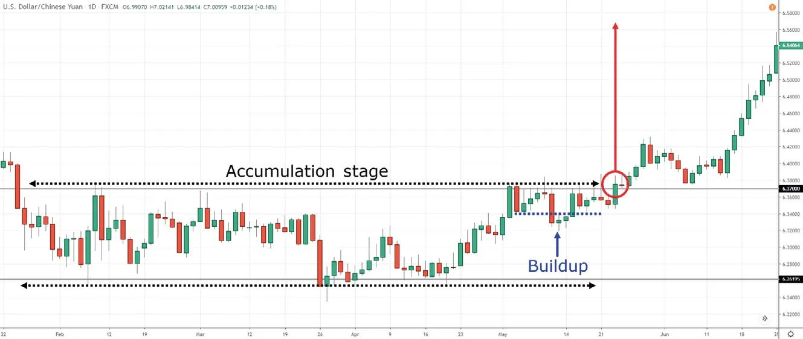USDCNH is in a potential accumulation stage (market structure). I use the word “potential” because you never know if the price will break out higher or continue the downtrend. Next, there’s a buildup formed around the 6.3700 resistance area. This tells you one of two things: 1) The buyers are willing to buy at higher prices, even at resistance; or 2) there’s a lack of selling pressure, and that’s why the price is unable to move lower. Whatever the case, this is a sign of strength.
So to trade the breakout, you can go long with a buy stop order above the highs of resistance (entry trigger). Your stop loss goes 1 ATR below the lows of the buildup (exit when you’re wrong) and you can trail your stop loss to ride the potential trend (exit when you’re right).
Now, I prefer to use a trailing stop because this could possibly move into the advancing stage, which offers huge profit potential. Of course, you must decide what’s best for you. Don’t just blindly copy what I do. Also, I didn’t specify which trailing stop loss technique to use because that’s something you can decide for yourself. Remember, the why is more important than the how.
Example 2: Bitcoin daily:
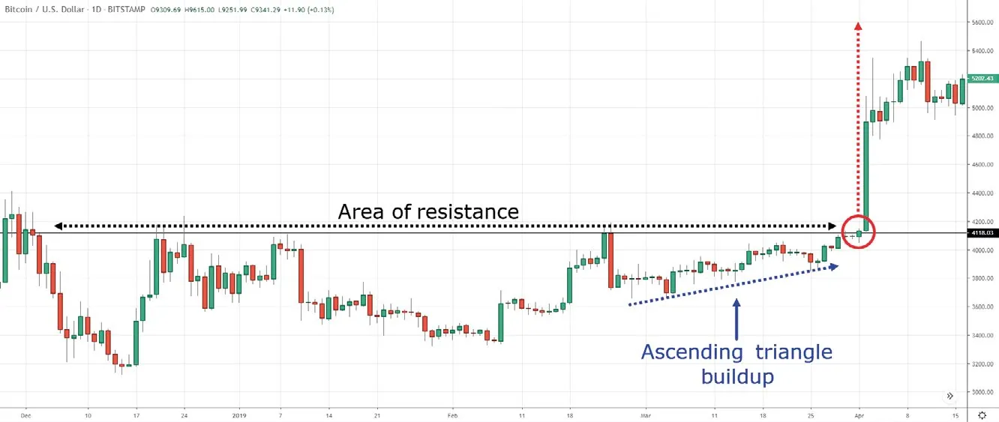This bitcoin example is similar to the USDCNH example, so I won’t go into much details. However, I want you to pay attention to the buildup that’s formed. Unlike the earlier example where the buildup resembled a “box,” this buildup has a series of higher lows coming into resistance (also known as an ascending triangle).
Again, this is a sign of strength because it shows you that buyers are willing to buy at higher prices, and there’s a lack of selling pressure to push the price lower. Your stop loss can go 1 ATR below the previous swing low or below the trendline (which you can connect from the lows).
Example 3: USDCAD daily:
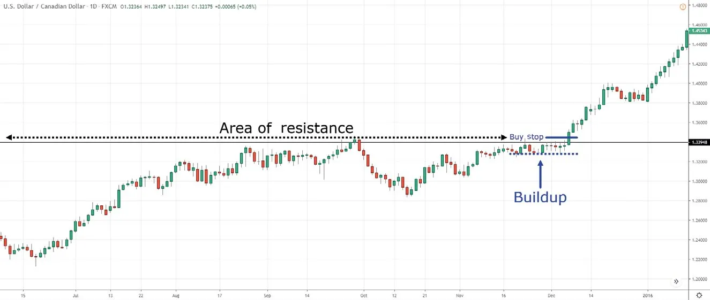USDCAD is in an advancing stage (market structure). Now, you could argue this is a potential distribution stage, and you wouldn’t be wrong either. As you can see, price action trading can be subjective, and different traders can interpret the markets differently. But why I’m bullish is because the uptrend is intact, and there’s a buildup formed at resistance (which is a sign of strength).
However, I don’t want to jump into the trade too early just because I’m bullish—the breakout might not occur. Instead, I’ll place a buy stop order above the highs. If it’s triggered, I’m long (or else, I’m on the sidelines). The key here is to trade what you see, not what you think (no matter how confident you are).
Now, you might be thinking, “Is there a variation of the MBEE formula?” Of course! In the earlier examples, the buildup occurs before the breakout. But there are times when the buildup forms after the breakout. Here’s what I mean:
Example 4: EURUSD daily:
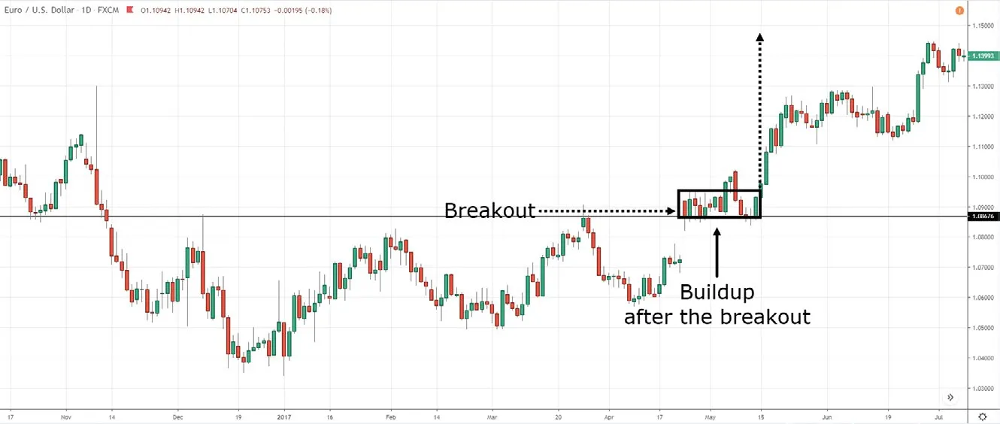BONUS TIPS (MBEE FORMULA)
Let me ask you, when you need to get to your destination in the fastest possible time, do you use the highway with less traffic or the smaller roads with high traffic? It’s a no-brainer: You use the highway.
It’s the same for trading. When you place a trade, you want as little “traffic” as possible. So if you’re selling breakdowns, you don’t want to sell into support since that’s where buying pressure is lurking.
Even though there’s a buildup formed on EURGBP, I would avoid shorting this market because a little below my entry point, there’s an area of support (around 0.8500) where buying pressure could step in and push the price higher. So if your stop loss is 1 ATR above the highs of the buildup, and your target profit is at support, this means you’re risking $1 to make $0.3—a poor risk-to-reward ratio. Remember, don’t trade into “traffic.” Instead, find trading setups with little-or-no “traffic” so the price can quickly move from one area to the next.
2. Let the 20-period moving average (MA) be your guide
One of the struggles I used to face when identifying buildups was wondering how long they should be. Five candles? Ten candles? Twenty candles? I didn’t have a definite answer because it depends on the context of the markets, so I looked through my past trades and found something important. I realized the best buildup occurs when it has enough time to “digest” the recent move. So if you’re looking for a bullish buildup, you’ll notice the 20-period moving average (MA) has caught up with the lows of the buildup—and that’s when the market is ready to break out.
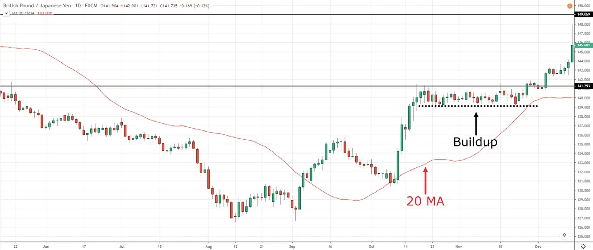In addition, your stop loss is even more “protected” since it’s 1 ATR below the lows of the buildup, which coincides with the 20 MA. Nice!
3. The tighter the buildup, the better
You can think of a buildup as the market storing “potential” energy for the move that’s going to happen later. So the tighter the buildup, the more “potential” energy is stored up for release—and the stronger the breakout. Also, you want to avoid loose buildup which looks like a range market with obvious swing highs and lows. Why? There are two reasons for this: 1) When the buildup is loose, your stop loss is larger, which reduces your risk-to-reward ratio on the trade. 2) If you’re in a long trade, the highs of a loose buildup are where selling pressure is lurking (since it’s resistance on the lower time frame), and that’s an obstacle you have to overcome.
THE DERR FORMULA
The DERR formula is a process that can transform your trading even if you’ve been losing for years or breaking even for the longest time. DERR stands for develop your trading plan, execute, record, and review.
Develop your trading plan
A trading plan is a set of guidelines that define your trading. This reduces subjectivity in your trading, prepares you for the worst-case scenario, and allows you to be a consistent trader. This is powerful, right? So how do you develop a trading plan? Well, it needs to answer these six questions:
What is your time frame?
This depends on the amount of time you can commit to trading. If you can set aside 10 hours a day for trading, then trading the lower time frames is possible. But if you have a full-time job and can’t spend the whole day watching the markets, then consider trading the daily or weekly time frame.
What markets are you trading?
If, for example, you want to trade stocks, what type of stocks will you trade? They could be the large-cap, mid-cap, or small-cap. Or, if you are going to trade forex, which currency pairs will you focus on? You must define the markets to trade or you’ll be all over the place (trying to “shoot” anything that moves).
What are the conditions of your trading setup?
For example, if you trade breakouts, how will you enter a breakout? You might go for the 50-day highs, the 200-day highs, the highest close over the last 100 days, etc. Also, are there any other conditions that must occur for you to trade the breakout? For example, your condition might be that you only trade when the market is in an uptrend, or a low volatility environment, etc.
How will you exit your trade if you’re wrong?
You should set your stop loss at a level that invalidates your trading setup. For example, if you trade a breakout, then what level on the chart would the price have to hit to signal to you that the breakout has failed? That’s where you set your stop loss.
How will you exit your trade if you’re right?
This depends on your goals. Are you trying to capture a swing or ride a trend? Once you decide this, you can use the appropriate technique. If you want to ride a trend, then you must trail your stop loss. Alternatively, if you want to capture a swing, you must have a fixed target profit.
How much do you risk per trade?
Recall that if your drawdown gets too deep, it will be nearly impossible to get back up (since the math is against you). So the key is to risk a fraction of your capital on every trade (my suggestion is not to risk more than 1% of your account).
How many units do you trade?
Once you’ve defined your entry point, stop loss, and the amount you want to risk, then you can calculate the correct position size to trade. Now, you don’t have to calculate it manually because you can use a position size calculator. You can find one on Google or get one here: priceactiontradingsecrets.com/bonus
Let me give you a template you can use for your trading plan. Here’s an example:
If I’m trading, then I’ll focus on the Russell 1000 stocks and on the daily time frame (markets traded and time frame).
If the price is above the 200-day moving average and makes a 200-day high, then I’ll go long on the next candle’s open (conditions of your trading setup).
If my entry is triggered, then I’ll have a trailing stop loss of 20% from the highs (exit).
If I get stopped out of the trade, then my loss will not be more than 1% of my capital (risk management).
After you execute and record your trades (at least 100 of them), you can review them to see if you have an edge in the markets. Generally, if your trading account is green after 100 trades, chances are you have an edge in the markets. But to break it down further, here’s a formula you can use:
Expectancy = (Winning % * Average win) – (Losing % * Average loss) – (Commission + Slippage)
Here’s an example, let’s say your strategy has:
Plug these into the formula, and you get:
Expectancy = (0.5 * 1000) – (0.5 * 500) – (10)
= $240
If you get a positive expectancy, it means your trading strategy has an edge in the markets. Now you’re probably wondering, “But what does the number mean?” In our earlier example, it means you’ll earn an average of $240 per trade in the long run. But what if you get a negative expectancy? What now? Well, that’s where your trading journal comes into play. I’ll explain.
Identify patterns that lead to your winners
Because you recorded and captured screen shots of your trades, you can identify the common patterns that lead to your winners—and focus on making similar trades. For example, one of my “aha” moments came when I realized that most of my successful breakout trades occurred after a buildup was formed. So what did I do? I focused on trading breakouts with a buildup. If there’s no buildup, then there are no breakout trades for me.
Identify patterns that lead to your losses
Likewise, you can look at your losses and identify common patterns that lead to these losses—and avoid making the same kinds of trades. This will reduce your losses and improve your overall profitability.
Remove large losses
You can trade with an edge and follow your trading plan 95% of the time— and still lose money. Why? This happens because for the remaining 5% of the time, you break your rules and incur huge losses that erode all your profits. If that sounds like you, then ask yourself why you do this. Is it because of the fear of losing, the fear of missing out, or the fear of being wrong? Be honest with yourself. Then write down the steps you’ll take to prevent it from happening again—and follow them. Ultimately, if you want to improve your trading, you must review your trades. That’s only possible if you have a trading plan that you execute and record consistently—otherwise known as the DERR formula.
“If you can’t measure it, you can’t improve it.” — Peter Drucker.
You can see how everything comes together using the three formulas I’ve taught you. The MAEE and MBEE formulas allow you to develop your own trading strategies to trade reversals and breakouts. And finally, the DERR formula helps you to constantly review and improve your trading results. But remember, these are simply formulas to guide your responses, they‘re not cast in stone. So feel free to tweak them and modify them to suit your own needs. Cool?